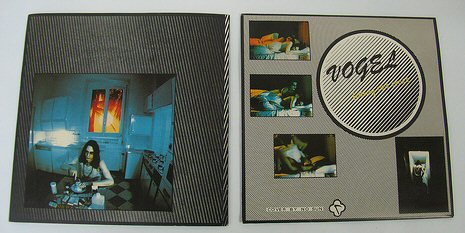

Thursday, February the 24th, 2011
back to: title, date or indexes
For no particular reason, Vogel with the late Ivor Cutler. Genius at work.
Arschloch (click to listen)

Arschloch, by Ivor Cutler
Download: ../Media/2011-02-31-Good-Morning.mp3